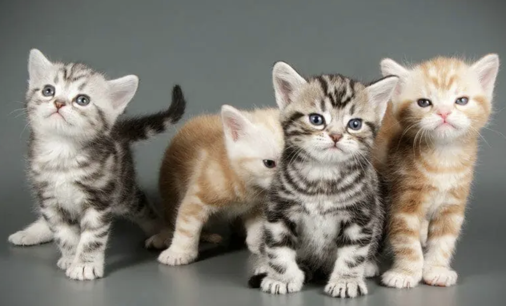

The American Shorthair is a breed of domestic cat believed to be descended from European cats brought to North America by early settlers to protect valuable cargo from mice and rats.
The American Shorthair is recognized in more than eighty different colors and patterns ranging from the brown-patched tabby to the blue-eyed white, the shaded silvers, smokes and cameos to the calico van, and many colors in between. Some even come in deep tones of black, brown, or other blends and combinations.